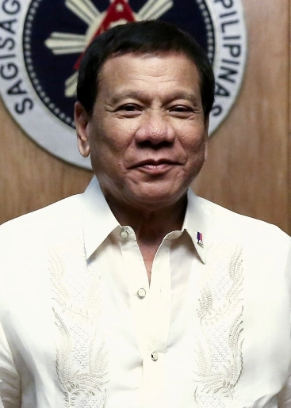

16th President of the Philippines | President Rodrigo Duterte
Rodrigo Roa Duterte was born on March 28, 1945, in Maasin, Southern Leyte.[47] His father was Vicente Gonzales Duterte (1911–1968), a Cebuano lawyer, and his mother, Soledad Gonzales Roa (1916–2012), was a schoolteacher from Cabadbaran, Agusan and a civic leader of Maranao descent. Duterte has said that his grandfather was Chinese and
hailed from Xiamen in Fujian, China.[48] Duterte has four siblings: Eleanor, Jocelyn, Emmanuel and Benjamin.[49]Duterte's father was mayor of Danao, Cebu, and subsequently the provincial governor of (the then-undivided) Davao province. Rodrigo's cousin Ronald was mayor
of Cebu City from 1983 to 1986. Ronald's father, Ramon Duterte, also held that position from 1957 to 1959. The Dutertes consider the Cebu-based political families of the Durano and the Almendras clan as relatives.[50][51] Duterte also has relatives from the Roa clan in Leyte through his mother's side.[52] Duterte's family lived in Maasin, and in his father's hometown in Danao, until he was four years old.[53] Duterte was heavily influenced by his mother,
who unlike Vicente was a staunch anti-Marcos activist, which led the young Duterte to have a divided opinion on the Marcoses. Duterte later said Marcos
could have been the best president, but unfortunately he was a dictator.[54] The Dutertes initially moved to Mindanao in 1948 but still went back and
forth to the Visayas until 1949.[55] They finally
settled in the Davao Region in 1950. Vicente worked as a lawyer engaged in private practice. Soledad worked as a teacher until 1952, when Vicente entered politics.[56]
Read More
Education and early law career
Duterte went to Laboon Elementary School in Maasin for a year.[52] He spent his remaining elementary days at Santa
Ana Elementary School in Davao City, where he completed his primary education in 1956. He finished his secondary education in
the High School Department of Holy Cross College of Digos (now Cor Jesu College) in Digos, Davao province, after being expelled
twice from previous schools, including one in the Ateneo de Davao University (AdDU) High School due to misconduct.[57] He graduated in 1968 with a Bachelor of Arts degree in
political science at the Lyceum of the Philippines in Manila.[58][59]
He obtained a law degree from San Beda College of Law in 1972.[60] In the same year, he passed the bar exam.[61] Duterte eventually became a special counsel at the City Prosecution Office in Davao City from 1977 to 1979, fourth assistant city prosecutor from 1979 to 1981, third assistant city prosecutor from 1981 to 1983, and second assistant city prosecutor from 1983 to 1986.[62][63]
Read More
Sexual abuse claims
Duterte has claimed he was sexually abused by a priest when he was a minor.[64] After he was challenged by the Catholic Bishops' Conference of the Philippines (CBCP)
and AdDU officials to name the priest and file a case against him, Duterte then revealed the priest's name as Mark Falvey (d. 1975).[64] The
Jesuits of the Society of Jesus in the Philippines confirmed that according to press reports in the United States, in May 2007, the Society of
Jesus agreed to a tentative payout of US$16 million to settle claims that Falvey sexually abused at least nine children in Los Angeles from 1959 to 1975.
Accusations against Falvey began in 2002 but he was never charged with a crime. In May 2008, the Diocese of Sacramento paid a $100,000-settlement to a person
allegedly raped and molested by Mark's brother, Arthur Falvey. However, it was not clearly indicated in the report if Mark Falvey was assigned at the Jesuit-run Ateneo de Davao.[65]
When asked why he did not complain when the abuse supposedly happened, Duterte claimed that he was too young to complain about the priest's
abuse and was intimidated by authorities at that time. He also stated that he never disclosed that information after he was expelled and moved to a different high school and especially not to his family.[66]
Read More